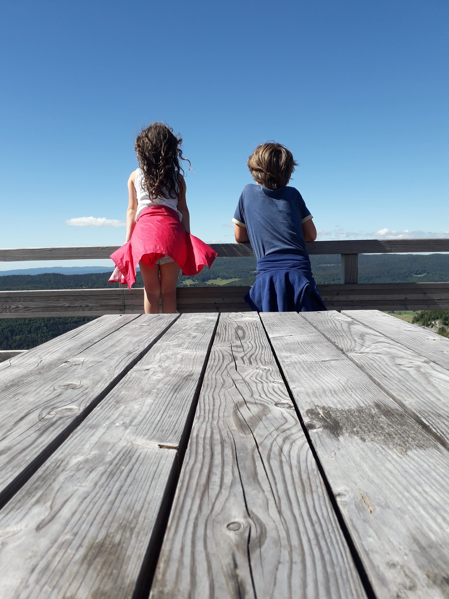

Notre volonté est d’aider les enfants à grandir et apprendre sereinement, de leur donner confiance et le sourire sur le chemin de l’école, peu importe leur parcours précédent (école publique, privée, IEF, qu’ils soient haut potentiel intellectuel ou en difficulté scolaire). Nous grandissons avec l’âge des enfants et nous poursuivons les classes jusqu’à la terminale.
Les bambous s’insèrent dans la tradition des modèles Freinet – Montessori et Faure en particulier ainsi que de l'école du dehors.
Les bambous ont été conçus pour que l’apprentissage soit avant tout un choix, une liberté, et qu’il puisse être reconnu comme tel pour tous. Le groupe d’enfants accueilli dans cette école, située au cœur d’un espace naturel, tient à son esprit convivial, presque familial. Au sein de ce groupe, la prise en compte de chaque individu — enfant, parent, équipe pédagogique — comme être unique est primordiale afin que chacun puisse s’épanouir dans les domaines qui lui sont propres. Cette sécurité étant apportée, nous pouvons tous sortir de notre zone de confort et explorer de nouveaux horizons ; l’objectif étant de découvrir, de faire émerger et de reconnaître les talents de chacun.
Cette école fonctionne en un modèle d’organisation qui nous permet d’imiter la réalité extérieure : en tant qu’adultes, dans la société, nous évoluons chaque jour avec des personnes de différents âges, sexes, personnalités, croyances... Au sein de notre école, les choses sont identiques, chacun est différent de l’autre ; enfants, membres de l’équipe pédagogique, bénévoles, membres de l’association, intervenants... Nous sommes en lien constant avec la réalité de la société dans laquelle nous devons tous évoluer. Ainsi, nous aidons les enfants et adolescents à trouver leur place dans une vie de groupe ainsi qu’à interagir avec les autres.
Pour cela, nous mettons en place des ambiances de travail avec des âges mélangés, source d’apprentissage, d’échanges, de coopération, de responsabilisation et de créativitéì. Le point de départ de chaque apprentissage est le désir de l’enfant et de l’adolescent. Ses centres d’intérêt, ses expériences, ses rencontres ou questionnements guident le pédagogue-facilitateur dans ses propositions pédagogiques. Des matériels didactiques très spécifiques, celui élaboré par Maria Montessori comme celui de Célestin Freinet, sont présentés aux enfants en fonction du stade d’apprentissage où ils en sont. L’environnement joue un rôle primordial : à l’intérieur comme à l’extérieur, la libertéì de mouvement est privilégiée, les classes sont aménagées pour que les enfants puissent être autonomes et en sécuritéì. Les pédagogies qui nous animent principalement sont :
- L’éducation active
- L’éducation démocratique
L’éducation active est un processus complexe mobilisant les savoirs, les compétences et les potentiels d’action dont les individus et les groupes en situation d’apprentissage sont capables. Les méthodes actives privilégient l’engagement personnel, l’expérimentation, la coopération et la confrontation constructive. Elles font vivre aux participants des situations d’apprentissage où ils exercent leur autonomie, leur esprit critique et leur créativité, seul ou à plusieurs. Ainsi, l’éducation active crée une interactivité entre les individus, les groupes, l’expérimentation et le savoir théorique ; elle permet de développer des compétences directement adaptées au contexte, à l’environnement et aux objectifs présentés dans le projet pédagogique.
Le rôle de l’adulte facilitateur est d’accompagner l’enfant dans la découverte de sa vraie nature et la révélation de son potentiel et ses talents.
Les adultes facilitateurs de l’École Les bambous administrent le lieu, gèrent les relations avec les institutions et les partenaires et font vivre l’auto-gouvernance du lieu : ils sont garants de l’application des règles de vie et de la réalisation des temps collectifs régissant la vie de l’école.

Dans leur mission éducative, les adultes facilitateurs ont celle d’accompagner les enfants dans leurs activités en respectant les choix et motivations des enfants ; si l’enfant rencontre des difficultés dans ses activités, l’adulte pourra s’investir davantage dans le temps consacré à l’enfant, ou bien trouver des ressources supplémentaires pour l’aider à atteindre ses objectifs.
Loin de nous l’idée des chaises, des tables et du « tableau noir ». Les enfants âgés en moyenne de 3 à 18 ans, enfilent leurs bottes et leur k-way pour grimper aux arbres, peindre, découvrir la faune et la flore, se balader sur de nouveaux sentiers… Le programme est vaste ! Les activités bien sûr encadrées.
Cependant, deux heures d’apprentissage formel auront lieu au quotidien de manière à ce que chaque enfant puisse acquérir le socle commun de compétences.
En étude de la langue, les pédagogies Montessori, l’accès à la littérature et des ateliers d’écritures seront à l’honneur. Pour la lecture, la méthode sera syllabique afin de développer au mieux la conscience phonologique de chaque enfant. La méthode syllabique à l'avantage d'allier lecture et orthographe. En effet un enfant qui connaît bien les phonèmes et les graphèmes aura plus de facilité à les reproduire à l'écrit.
En mathématiques, différentes méthodes telle que la méthode heuristique des maths, la méthode Singapour et surtout la manipulation sera privilégiée. Il ne suffit pas d'apprendre par cœur les théorèmes et raisonnements mathématiques. Il faut les comprendre, se les approprier pour pouvoir les réexpliquer de manière simple et concise.
Les langues sont également travaillées à travers des ateliers linguistiques. Non seulement les aspects grammaticaux seront étudiés mais différentes interventions en civilisation sont développées. Les principales langues étudiées seront l’anglais, l’italien et l’espagnol mais toutes les demandes pourront être considérées si l’enfant présente un intérêt particulier.

- La connexion à la nature
- La communication non violente
- L’abondance
La nature est au centre de notre univers : être attentif à l’être humain, être attentif à la terre, en respectant la vie et les animaux qui se trouvent sur le site. Nous avons effectivement sur le terrain quelques poules, des chèvres, un chien….
Être en harmonie avec soi et avec les autres, être dans la joie de contribuer au bonheur de l’autre. Par ailleurs, les facilitateurs sont tous formés à la communication non violente.
Être en confiance avec le fait que tous nos besoins peuvent être satisfaits. Les facilitateurs sont attentifs aux besoins de chaque enfant et feront en sorte qu’ils aient les moyens de les satisfaire pleinement
Globalement, les bambous plaident pour des espaces de classe en intérieur repensés pour encourager la créativité des enfants en diversifiant les espaces d’apprentissage au travers d’un mobilier plus flexible et adapté à l’expérimentation. L’enfant apprend ainsi à son rythme, par la valorisation de ses initiatives, loin des contraintes physiques ou morales de la salle de classe classique. L’École Les bambous prolongent cette idée en élargissant le cadre par sa situation géographique idéale.